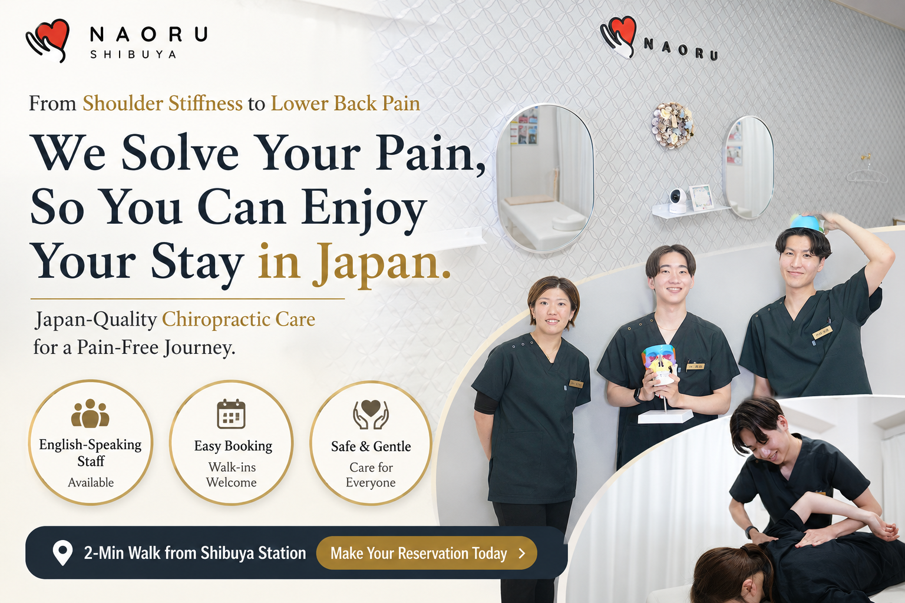

Triple Crown! We achieved No. 1 in three categories.



See the

results of clients who received 5 Seitai sessions!

Female, 30sFemaleMild case
Chronic Shoulder Stiffness


Female, 60sFemaleSevere case
Chronic Lower Back Pain


* Numerical results from the NAORU Seitai Group's [AI Posture Analysis].
Female, 20s
The shoulder stiffness from my desk job disappeared once my posture was corrected! I'm so happy!
Female, 60s
I had given up on my chronic lower back pain, but after one session my body felt lighter, and with each treatment I can feel my body getting more flexible.
Female, 20sFemaleMild case
Shoulder & Neck Stiffness


Female, 60sFemaleSevere case
Chronic Shoulder Stiffness


* Numerical results from the NAORU Seitai Group's [AI Posture Analysis].
Female, 30s
From the very start, the staff communicated kindly and warmly with me. For someone who was nervous, that helped me relax — I really appreciate it!
Female, 60s
My desk-job shoulder stiffness used to be so bad I had to take medication, but after posture correction I've cut back significantly on how often I need it! My job is demanding, so this is a huge help.

Chronic Shoulder Stiffness, Back Pain, Headaches, Poor Posture, Pelvic Alignment, Postpartum Body Care, Chronic Fatigue, Insomnia, Stiff Neck (from sleeping poorly), Knee Pain, Hip Joint Pain, beauty-related concerns (varies by branch). We can also address minor and detailed symptoms.
The following are NOT offered at NAORU Seitai:
Treatment for fractures, dislocations, sprains, etc.

Announcements from NAORU Seitai Shibuya Branch
2025/07/27
"About 10 minutes on foot from JR / Subway Shibuya Station"
"About 10 minutes on foot from Subway Omotesando Station"


| Hours | Mon | Tue | Wed | Thu | Fri | Sat | Sun | Hol |
|---|---|---|---|---|---|---|---|---|
| 11:00–20:00 | ◯ | ◯ | ◯ | ◯ | ◯ | ◯ | ◯ | ◯ |
Closed: Irregular holidays

Tap to callTEL: 070-8519-6347
Easy & Convenient!Book via LINE
24h BookingBook Online

(1) Exit JR Shibuya Station via the New South Exit and turn left — it connects directly to Shibuya Stream. Subway Shibuya Station Exit C2 also connects directly to Shibuya Stream.

(2) Go down to the 2nd floor of Shibuya Stream and head toward Elevator No. 32. Pass Elevator No. 32 and exit outside.

(3) Get off Elevator No. 35 and follow the road.

(4) Follow National Route 246 (Aoyama-dori) for about 400 m.

(5) Turn right at the intersection in front of Aoyama Gakuin (look for the 7-Eleven on the opposite side of the road as a landmark).

(6) Enter the street between Aoyama Gakuin University and 7-Eleven, and you will see Aoyama Alcoop. Our clinic is in Room 606.

(1) Exit Omotesando Subway Station via Exit B1 or B3. Exit B1 has stairs only; Exit B3 has an escalator.

(2) After exiting, head left and walk straight along National Route 246 (Aoyama-dori).

(3) After about 500 m, turn left at the intersection in front of Aoyama Gakuin (you'll see a 7-Eleven directly in front of you).
(4) Continue straight and you will see Aoyama Alcoop. Our clinic is in Room 606.

[Branch Director] Yusa Koh
[Certification] Physical Therapist (Licensed PT)
[Career]
Graduated from Chiba Prefectural University of Health Sciences
2017: Joined Konseikai Funabashi Orthopedic Group
2024: Joined NAORU Technology Co., Ltd.
[Greeting]
Hello, everyone!
I'm Yusa, Physical Therapist at NAORU Seitai Shibuya Branch.
"To bring smiles and happiness to every person I meet."
Many people are so busy with their daily lives that they don't notice the warning signs from their bodies, and before they realize it they have developed Chronic Shoulder Stiffness or Chronic Lower Back Pain.
A body that constantly hurts, that won't move the way you want, mental exhaustion, no energy for your favorite hobbies, no motivation to do anything…
I want to help people in that situation regain their energy and their smiles.
With that belief, I will do everything I can to support each guest's needs and goals through their treatment.
As a clinician, I have treated many patients in orthopedic clinics in Japan and overseas.
Drawing on that experience, please let me support each of you with all my heart so that every guest leaves with a smile.
Please feel free to consult me about even the smallest concern.
Let's work together toward a healthy body so the community of Shibuya Ward can be happier, too!
I look forward to welcoming you at the clinic!


[Name] Shoko Sakai
[Certification] Acupuncturist (Licensed Acupuncturist)
[Career]
2020–2023: iCure Acupuncture & Osteopathic Clinic (Osaka)
2023–2025: Worked at massage clinics in Australia and New Zealand
2025–present: Joined NAORU Technology Co., Ltd. (Shibuya Branch)
[Greeting]
Hello, I'm Shoko Sakai, the Licensed Acupuncturist providing treatments at NAORU Seitai Shibuya. After gaining experience at an acupuncture & osteopathic clinic in Osaka and at massage clinics in Australia and New Zealand, I have supported clients primarily with Chronic Shoulder Stiffness, Chronic Lower Back Pain, Poor Posture, and Pelvic Alignment.
I have a great deal of experience helping clients with desk-job shoulder stiffness, Hunchback (Forward Head Posture), lower back pain from standing work, and other concerns caused by daily habits and posture. Please also feel free to consult me about women's concerns such as poor circulation, swelling, menstrual pain, and postpartum pelvic issues.
I carefully assess each person's condition and provide treatment that addresses the root cause. Please don't endure pain or discomfort on your own — come and talk with me. I will support you so that every day feels more comfortable.

 We use the latest AI Posture Analysis and tailor your treatment to your symptoms and condition — not a one-size-fits-all manual. Of course, we will explain everything until you are fully satisfied, so please rest assured!
We use the latest AI Posture Analysis and tailor your treatment to your symptoms and condition — not a one-size-fits-all manual. Of course, we will explain everything until you are fully satisfied, so please rest assured!
 We do more than simply adjust the pelvis — we provide care that helps moms look back on raising a child as a joyful experience rather than a hard one!
We do more than simply adjust the pelvis — we provide care that helps moms look back on raising a child as a joyful experience rather than a hard one!
 By addressing both the muscles and the skeletal system, our clinic delivers faster results for symptoms that wouldn't improve with treatments targeting only one or the other!
By addressing both the muscles and the skeletal system, our clinic delivers faster results for symptoms that wouldn't improve with treatments targeting only one or the other!
♦ I came in for left shoulder pain that had lasted for 3 years. They clearly explained that the cause wasn't only in my shoulder but in other parts of my body too, which made perfect sense to me.
After the treatment my shoulder and whole body felt lighter, and they even taught me self-care methods — it was so helpful. The atmosphere in the clinic is calm and reassuring, and I plan to come regularly. (Male, 40s)
♦ They gave me a detailed explanation of what was causing my straight-neck syndrome, so I was able to receive the treatment with full confidence. My spine had been extremely stiff, but even after a single session my range of motion expanded dramatically. Thank you! (Female, 20s)
♦ The staff were not only highly knowledgeable and skilled — they were also extremely polite while still being friendly, which made for a very pleasant visit. I clearly felt the results of the treatment and am thoroughly satisfied.
This is a place I want to keep coming back to. (Male, 30s)
♦ They looked at my current condition and explained everything carefully and clearly. They listened so warmly that I could place myself in their care with complete confidence. Even a single session produced surprising results. I want to keep coming and improve both my posture and my breathing! (Female, 30s)
♦ I had suffered from a hunchback for decades, but after being treated at this clinic I felt a huge change in my body in just a short time. The before-and-after photos showed the difference clearly — the level of treatment was truly moving! Highly recommended. (Female, 50s)
A. We do not accept health insurance at our clinic.
However, we recommend our private-pay treatments because they don't just relieve pain — they get to the root cause of your pain.
A. The First-time Visit takes about 1 hour because it includes Consultation & Counseling and an AI Posture Analysis.
For Return Visits, please allow approximately 30 to 40 minutes, depending on your symptoms and condition.
A. Yes, you may bring your child.
The first time you plan to visit with a child, please let us know in advance.
A. "AI Posture Analysis" is a computer-based tool that precisely measures the condition of your body.
By visualizing changes in your body that were previously unclear, it lets you actually feel the effects of treatment as we go through your care plan.
| First-time Visit | ¥13,200 |
|---|---|
| Return Visits | ¥6,100 – ¥12,200 |
This is the Root Cause Alignment treatment we proudly recommend — designed to address the underlying cause of pain. We use gentle techniques and never apply forceful pressure or cracking. The First-time Visit includes a posture assessment using AI Posture Analysis and a Consultation & Counseling.
* Prices may vary by area.
Please contact each branch directly for details.

Tap to callTEL: 070-8519-6347
Easy & Convenient!Book via LINE
24h BookingBook Online


Last updated: